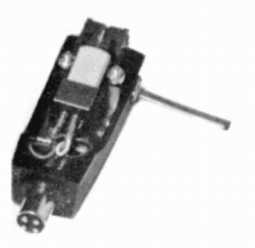

SHARP（シャープ）/OPTONICA （オプトニカ）
総合家電メーカーであるシャープのオーディオブランド。ブランド名の由来は同社がかつて開発していた光電子式カートリッジの「光(OPTO）」からつけたとの説がある。ブランドとしては平面振動板などユニークなスピーカが記憶に残っている。
 （光電子式カートリッジを採用したセパレート・ステレオ）
（光電子式カートリッジを採用したセパレート・ステレオ）
システム製品用で光電子式カートリッジを開発したほどであったが、1970年代以降の単品コンポ時代にはアナログディスク関連はあまり熱心とはいえない状態だったようだ
�T.カートリッジ
4C-1

■価格 12,000円
■発電方式 MM型
■出力電圧 2mV
■針圧 1.5〜2.0g
■再生周波数帯域 20-45,000Hz
■負荷抵抗
■自重
■交換針
■発売
1973年頃
■販売終了
■備考 価格は1973年頃のもの
4チャンネル(CD-4）対応機